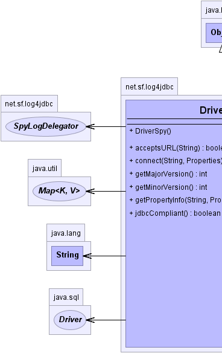
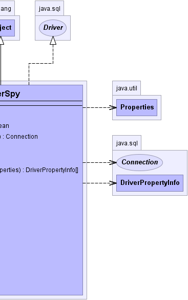

net.sf.log4jdbc.DriverSpy
net.sf.log4jdbc.DriverSpy
|
log4jdbc4 1.2beta2 | ||||||||
| PREV CLASS NEXT CLASS | FRAMES NO FRAMES | ||||||||
| SUMMARY: NESTED | FIELD | CONSTR | METHOD | DETAIL: FIELD | CONSTR | METHOD | ||||||||
java.lang.Object
public class DriverSpy
A JDBC driver which is a facade that delegates to one or more real underlying
JDBC drivers. The driver will spy on any other JDBC driver that is loaded,
simply by prepending jdbc:log4 to the normal jdbc driver URL
used by any other JDBC driver. The driver, by default, also loads several
well known drivers at class load time, so that this driver can be
"dropped in" to any Java program that uses these drivers without making any
code changes.
- oracle.jdbc.driver.OracleDriver
- com.sybase.jdbc2.jdbc.SybDriver
- net.sourceforge.jtds.jdbc.Driver
- com.microsoft.jdbc.sqlserver.SQLServerDriver
- com.microsoft.sqlserver.jdbc.SQLServerDriver
- weblogic.jdbc.sqlserver.SQLServerDriver
- com.informix.jdbc.IfxDriver
- org.apache.derby.jdbc.ClientDriver
- org.apache.derby.jdbc.EmbeddedDriver
- com.mysql.jdbc.Driver
- org.postgresql.Driver
- org.hsqldb.jdbcDriver
- org.h2.Driver
Additional drivers can be set via a property: log4jdbc.drivers
This can be either a single driver class name or a list of comma separated
driver class names.
The autoloading behavior can be disabled by setting a property:
log4jdbc.auto.load.popular.drivers to false. If that is done, then
the only drivers that log4jdbc will attempt to load are the ones specified
in log4jdbc.drivers.
If any of the above driver classes cannot be loaded, the driver continues on
without failing.
Note that the getMajorVersion, getMinorVersion and
jdbcCompliant method calls attempt to delegate to the last
underlying driver requested through any other call that accepts a JDBC URL.
This can cause unexpected behavior in certain circumstances. For example,
if one of these 3 methods is called before any underlying driver has been
established, then they will return default values that might not be correct
in all situations. Similarly, if this spy driver is used to spy on more than
one underlying driver concurrently, the values returned by these 3 method
calls may change depending on what the last underlying driver used was at the
time. This will not usually be a problem, since the driver is retrieved by
it's URL from the DriverManager in the first place (thus establishing an
underlying real driver), and in most applications their is only one database.
|  |  |
| Constructor Summary | |
|---|---|
DriverSpy()
Default constructor. |
|
| Method Summary | |
|---|---|
boolean |
acceptsURL(String url)
Returns true if this is a jdbc:log4 URL and if the URL is for
an underlying driver that this DriverSpy can spy on. |
Connection |
connect(String url,
Properties info)
Get a Connection to the database from the underlying driver that this DriverSpy is spying on. |
int |
getMajorVersion()
Get the major version of the driver. |
int |
getMinorVersion()
Get the minor version of the driver. |
DriverPropertyInfo[] |
getPropertyInfo(String url,
Properties info)
Gets information about the possible properties for the underlying driver. |
boolean |
jdbcCompliant()
Report whether the underlying driver is JDBC compliant. |
| Methods inherited from class java.lang.Object |
|---|
clone, equals, finalize, getClass, hashCode, notify, notifyAll, toString, wait, wait, wait |
| Constructor Detail |
|---|
public DriverSpy()
| Method Detail |
|---|
public int getMajorVersion()
getMajorVersion in interface Driverpublic int getMinorVersion()
getMinorVersion in interface Driverpublic boolean jdbcCompliant()
jdbcCompliant in interface Drivertrue if the underlying driver is JDBC Compliant;
false otherwise.
public boolean acceptsURL(String url)
throws SQLException
jdbc:log4 URL and if the URL is for
an underlying driver that this DriverSpy can spy on.
acceptsURL in interface DriverSQLException - if a database access error occursurl - JDBC URL.
public Connection connect(String url,
Properties info)
throws SQLException
connect in interface DriverSQLException - if a database access error occursurl - JDBC connection URL
.info - a list of arbitrary string tag/value pairs as
connection arguments. Normally at least a "user" and
"password" property should be included.
Connection object that represents a
connection to the URL.
public DriverPropertyInfo[] getPropertyInfo(String url,
Properties info)
throws SQLException
getPropertyInfo in interface DriverSQLException - if a database access error occursurl - the URL of the database to which to connectinfo - a proposed list of tag/value pairs that will be sent on
connect open
DriverPropertyInfo objects describing
possible properties. This array may be an empty array if no
properties are required.
|
log4jdbc4 1.2beta2 | ||||||||
| PREV CLASS NEXT CLASS | FRAMES NO FRAMES | ||||||||
| SUMMARY: NESTED | FIELD | CONSTR | METHOD | DETAIL: FIELD | CONSTR | METHOD | ||||||||